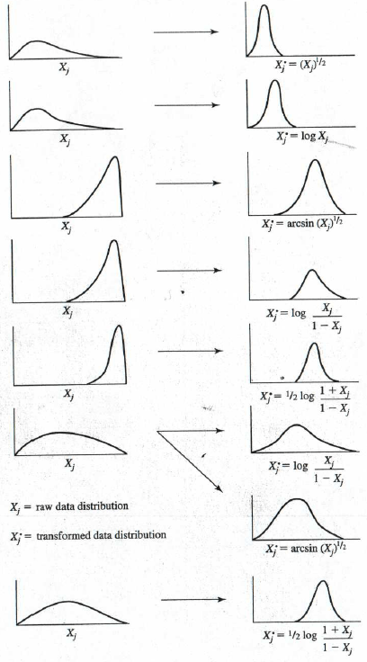

Beyond Supervised Learning
A Supervised Learning algorithm only works when both input and output is provided. Unsupervised learning only works with just the input data without provided the output values. This can be done using Unsupervised algorithms like Clustering and many more.

What is Clustering?
Clustering is a Unsupervised Learning algorithm which does not use labelled data but uses Unlabelled data and groups the data into individual clusters which makes this algorithm so much useful than Supervised Learning algorithms as we need to specify the output prehand in order for the Supervised Learning Algorithms to learn from the provided data.

Applications of Unsupervised Learning
Grouping Similar News. (Eg: Group about Pandas,...;)
DNA Analysis.
Astronomical Data Analysis - Here Astronomers use Clustering algorithms to cluster some part of the space in order to analyze better.
These are Applications of Unsupervised Learning and there are many areas where Unsupervised learning gives an advantage over Supervised Learning.
Let us look and learn the first Clustering Algorithm which is the K-Means Clustering Algorithm.
K-Means Intuition
K-Means is an Clustering Algorithm which is a Unsupervised Algorithm. In K-Means first plots all the data points and loops 2 operations in order to find different clusters present in the given data.
The two steps are:
- Assign every point to the cluster centroid, depending on what cluster centroid is nearest to.
- Move each cluster centroid to the average or the mean of all the points that were assigned to it.

Now, let us discuss more about the inner working and learn about the K-Means algorithm.
K-Means Algorithm
The K-means algorithm is a method to automatically cluster similar data points together.
In the clustering problem, we are given a training set 𝑥(1),...,𝑥(𝑚) , and want to group the data into a few cohesive "clusters." Here, we are given feature vectors for each data point 𝑥(𝑖) ∈ ℝ𝑛 as usual; but no labels 𝑦(𝑖) (making this an unsupervised learning problem). Our goal is to predict 𝑘 centroids and a label 𝑐(𝑖) for each datapoint. The k-means clustering algorithm is as follows:

Randomly initialize K cluster centroid u1, u2, ...., uk.
Repeat {
# Assign points to cluster centroids
for i = 1 to m
c(i) := index (from 1 to K) of cluster centroid closest to x(i)
# Move cluster centroids
for k = 1 to K
uk := average (mean) of points assigned to cluster k
}
K-means is an iterative procedure that
Starts by guessing the initial centroids, and then
Refines this guess by
Repeatedly assigning examples to their closest centroids, and then
Recomputing the centroids based on the assignments.
Let us understand the algorithm in depth:
The inner-loop of the algorithm repeatedly carries out two steps:
Assigning each training example x(i) to its closest centroid, and
Recomputing the mean of each centroid using the points assigned to it.
The 𝐾 -means algorithm will always converge to some final set of means for the centroids.
However, that the converged solution may not always be ideal and depends on the initial setting of the centroids.
Therefore, in practice the K-means algorithm is usually run a few times with different random initializations.
One way to choose between these different solutions from different random initializations is to choose the one with the lowest cost function value (distortion).
# Initialize centroids
# K is the number of clusters
centroids = kMeans_init_centroids(X, K)
for iter in range(iterations):
# Cluster assignment step:
# Assign each data point to the closest centroid.
# idx[i] corresponds to the index of the centroid
# assigned to example i
idx = find_closest_centroids(X, centroids)
# Move centroid step:
# Compute means based on centroid assignments
centroids = compute_means(X, idx, K)
K-Means Optimization
As we have seen in the previous courses that Gradient Descent was used as the optimization technique in order to reduce the cost of the mode. Here also we need a optimization technique but it is not gradient descent but it is called as Distortion .
The objective of K-Means clustering is to minimize total intra-cluster variance, or, the squared error function:
Distortion Measure can be either Sum of the square of the distance of each example to its nearest cluster center or Average of the euclidean squared distance from the centroid of the respective clusters.
$$J(c^{(1)}, c^{(2)}, ...., c^{(m)}, \mu_{1}, \mu_{2}, ...., \mu_{K}) = \frac{1}{m} \sum_{i=1}^{m} \left\| x^{(i)} - \mu_{c^{(i)}} \right\|^{2}$$
where
$$c^{(i)} = index\ of\ cluster\ (1,2, ..., K)\ to\ which\ example\ x^{(i)}\ is\ currently\ assigned$$
$$\mu_{k} = cluster\ centroid\ k$$
$$\mu_{c^{(i)}} = cluster\ centroid\ of\ cluster\ to\ which\ example\ x^{(i)}\ has\ been\ assigned$$
This is the equation used for K-Means Optimization.
Initializing K-means
Random intialize K cluster centroids and make sure that number of cluster centroids is always less than the number of training examples i.e, K < m.
The K-means algorithm has a problem called the random initialization trap.When the centroids of the clusters that are to be generated are explicitly defined by the user in the random initialization trap, inconsistencies may be created, which may occasionally result in the dataset being generated with the wrong clusters.As a result, the random initialization trap may occasionally prevent us from creating the appropriate clusters.

k-Means clustering is prone to initial seeding i.e. random initialization of centroids which is required to kick-off iterative clustering process. Bad initialization may end up getting bad clusters. The above diagram shows one example where for if initial seed happens to be one each in red, blue and green regions then we get true clustering (left image), but we may get wrong clustering (middle, right images) at other initial location.
for i = 1 to 100 {
Randomly initialize K-Means (Pick K random examples and set as cluster centroids)
Run K-Means. Get c(1), ...., c(m) and μ1, ...., μk
Compute Cost Function (Distortion) (J(c(1), ...., c(m) , μ1, ...., μk))
}
Pick set of cluster that gave lowest J (Cost)
It is costly since multiple iterations must be run to find the appropriate clusters which has the lowest cost.
Choosing the number of clusters
Choosing the number of clusters is always a ambiguous task. No one can truly tell if the choosen number of clusters is truly dependable.
There have methods developed in academia like Elbow method to choose the number of clusters. For this we need to plot the graph between Number of clusters and Cost Function.

But normally the cost function does not always have a elbow present. It will mostly have a smooth curve which makes the elbow method not viable.
Note: Never choose K just to minimize the Cost Function J. This means that never choose the highest value of clusters for the sole purpose to reduce Cost.
Let us see what is a good method to choose the number of clusters. The number of clusters choosen must be based on the problem that you are dealing with. Let us take the example of a T-shirt Business. They want to cluster their size profiles to manage their inventory.
If the there are 3 sizes S, M, L then we might need 3 clusters. If we would group them for further future purpose also then let us take 5 sizes XS, S, M, L, XL then we might need 5 clusters. Let us take visual look at it:

Finding Unusual events
Let us look at the example of Aircraft Engine Manufacturing and how we can use Anomaly Detection in this aspect.

As we can see the Aircraft engine has features Heat generated and vibration intensity. So, if we take a dataset of m engines with these features then if we plot them we could see that visually in the above picture. We can see the region where the engines made can be classified as no anomaly but if exceeds a certain region we can see that there are not that many engines made present we can classify that as an Anomaly.
Density Estimation
Let us look at Density Estimation and how it plays a role in Anomaly Detection.
In probability and statistics, density estimation is the construction of an estimate, based on observed data, of an unobservable underlying probability density function. Density estimation is estimating the probability density function of the population from the sample.
Let us use the same problem of Aircraft Engine Manufacturing and find the engine that has defects.
Density Estimation creates regions using probability of that to occur. As we can see in the image below, there are 3 regions created where the center region has the highest probability of the engines to be made without any defect. As we go outwards of the center region we can see that the probability decreases and there is likely a chance for the engine to show defects.
If we take a new engine for test and if we plot the data generated by the engine we can see the region it falls and we can check it with a variable ε. We can use the variable and check for probability p(xtest) < ε. Where ε is a small number. Using this we can check for Anomaly Detection. Let us discuss more about the Probability function (Gaussian Distribution) in the next section.

Anomaly Detection Examples
Let us discuss some examples of Anomaly Detection:
Fraud Detection
x(i) = features of user 𝑖’s activities
Model 𝑝(𝑥) from data.
Identify unusual users by checking which have 𝑝(𝑥) < 𝜀
Monitoring computers in a data center:
𝑥(i)= features of machine 𝑖
𝑥1 = memory use
𝑥2 = number of disk accesses/sec
𝑥3 = CPU load
𝑥4 = CPU load/network traffic
Some other examples would be Network Intrusion, Manufacturing and many more.
Gaussian (Normal) Distribution
Gaussian Distribution is also called as Normal Distribution or Bell-shaped Distribution.
Say x is a number. Then, Probability of 𝑥 denoted by P(𝑥) is determined by a Gaussian with mean 𝜇, variance 𝜎2.
Let us see the equation used for this:
$$p(x) = \frac{1}{\sqrt{2\pi} \sigma} e^{\frac{-(x-\mu)^{2}}{2\sigma^{2}}}$$
$$Mean = \mu = \frac{1}{m} \sum_{i=1}^{m} x^{(i)}$$
$$Variance = \sigma^{2} = \frac{1}{m} \sum_{i=1}^{m} (x^{(i)} - \mu)^{2}$$

Now, we have seen Parameter Estimation using 1 features. But there will be many features present. So, let us discuss how to tackle this in the next section.
Anomaly Detection Algorithm
In the previous section, we have seen Parameter Estimation i.e, using Gaussian Distribution for 1 feature. This section we will see how to implement for many features and also look into the Anomaly Detection Algorithm.
Let us take the previous example, Aircraft Engine Manufacturing where there were 2 features Temperature and Vibration.
$$Training\ set:\ {\vec{x}^{(1)}, \vec{x}^{(2)}, ...., \vec{x}^{(m)}}$$
$$Each\ example\ \vec{x}^{(i)}\ has\ n\ features$$
where, $$\vec{x} = \begin{bmatrix}
x_{1} \\
x_{2} \\
\vdots \\
x_{n}
\end{bmatrix}$$
$$p(\vec{x}) = p(x_{1}; \mu_{1}, \sigma_{1}^{2}) *\ p(x_{2}; \mu_{2}, \sigma_{2}^{2}) *\ .... *\ p(x_{n}; \mu_{n}, \sigma_{n}^{2})$$
Short form for the above equation is:
$$p(\vec{x}) = \prod_{j=1}^{n} p(x_{j}; \mu_{j}, \sigma_{j}^{2})$$
Algorithm
As we have seen the equations for Density Estimation i.e, to implement for more features. Let us see the algorithm for Anomaly Detection:
- Choose 𝑛 features 𝑥i that you think might be indicative of anomalous examples.
- Fit parameters μ1, ...., μn, σ12, ...., σn2.
$$\mu_{j} = \frac{1}{m} \sum_{i=1}^{m} x_{j}^{(i)}$$
$$\sigma_{j}^{2} = \frac{1}{m} \sum_{i=1}^{m} (x_{j}^{(i)} - \mu_{j})^{2}$$
- Given new example 𝑥, compute p(𝑥):
$$p(x) = \prod_{j=1}^{n} p(x_{j}; \mu_{j}, \sigma_{j}^{2}) = \prod_{j=1}^{n} \frac{1}{\sqrt{2\pi} \sigma} e^{\frac{-(x-\mu)^{2}}{2\sigma^{2}}}$$
- Final Step: Anomaly if 𝑝(𝑥) < 𝜀
This is the Algorithm for Anomaly Detection.
Developing and Evaluating an Anomaly Detection System
In the last section we have discussed about the algorithm for Anomaly Detection. If you have created a model it is better to keep some test cases for both anomaly cases and as well as non-anomaly cases for evaluating the Anomaly detection model.
When developing a learning algorithm (choosing features, etc.), making decisions is much easier if we have a way of evaluating our learning algorithm.
Assume we have some labeled data, of anomalous and non-anomalous examples.
As we have seen in previous course the evaluating techniques for a model:
Using Train and Test set does not produce that much of an impact. So, we should divide the dataset into Train, Cross-validation (Validation or Dev set) and Test Set.
Let us take the previous example Aircraft engines monitoring example:
Let us take a dataset containing 10,000 good (normal) engines and 20 flawed engines.
Let us divide into 2 cases:
CASE 1:
Here, we will have a Training set only containing good engines. Let it be 6000 samples.
Let the Cross-validation set contain 2000 good and 10 flawed engines.
Let the Test set contain 2000 good and 10 flawed engines.
CASE 2:
Here, we will have only 2 sets of evaluation: Train set and Cross-validation set for evaluation.
Let the Train set contain only good engines. Let it be 6000 samples.
In the Cross-validation set let the good engines be 4000 and the flawed engines be 20.
Let us discuss in detail about the cases above:
In case 2 as there is no test set there is higher risk of overfitting. Case 2 must be only used when we have very few labeled anomalous examples for evaluation.
Algorithm Evaluation
Let us go through the steps once more:
Fit model p(x) on training set x(1), x(2), ... , x(m)
On a cross validation/test example x, predict
$$y\ =
\begin{cases}
1,& \text{if } p(x) < ε\ (anomaly)\\
0, & \text{if } p(x) \geq ε (normal)
\end{cases}$$
In the last course we have seen some possible evaluation metrics:
True positive, false positive, false negative, true negative
Precision/ Recall
F1-score
The most effective method of evaluation is to use Cross-Validation set to choose parameter ε.
Anomaly Detection vs. Supervised Learning
| Anomaly Detection |
Supervised Learning |
| Very small number (0 to 20) of
positive examples 𝑦 = 1. |
Large number of positive examples. |
| Large number of negative examples (𝑦 = 0). |
Large number of negative examples. |
| Train Model 𝑝(𝑥) with just negative examples. Use positive examples for cv and test sets. |
Train, Validate, and Test Model with both positive and negative examples. |
| Many different “types” of anomalies. Hard for any algorithm to learn (from just positive examples) what the anomalies look like. |
Enough positive examples for algorithm to get a sense of what positive examples are like. |
| Future anomalies may look nothing like any of the anomalous examples seen so far. |
Future positive examples likely to be similar to ones in training set. |
| Examples of Anomaly Detection |
Examples of Supervised Learning |
- Financial Fraud Detection
- Manufacturing:
Finding new previously unseen defects. (e.g. Aircraft Engines)
- Monitoring machines in a data center
- Security applications
|
- Email Spam Classification
- Manufacturing:
Finding known, previously seen defects (e.g. scratches on smartphones, y = 1)
- Weather prediction (sunny/rainy/etc.)
- Diseases classification
|
Choosing what features to use
Let us discuss about Non-gaussian features. Anomaly detection that we have seen is mainly derived from Gaussian Distribution or Normal Distribution. So, the shape of the distribution must be in a bell-shaped.
In supervised learning, if you don't have the features quite right, or if you have a few extra features that are not relevant to the problem, that often turns out to be okay. Because the algorithm has to supervised signal that is enough labels why for the algorithm to figure out what features ignore, or how to re scale feature and to take the best advantage of the features you do give it. But for anomaly detection which runs, or learns just from unlabeled data, is harder for the anomaly to figure out what features to ignore. So I found that carefully choosing the features, is even more important for anomaly detection, than for supervised learning approaches.
One step that can help your anomaly detection algorithm, is to try to make sure the features you give it are more or less Gaussian.

Other than making sure that your data is approximately Gaussian, after you've trained your anomaly detection algorithm, if it doesn't work that well on your trust validation set, you can also carry out an error analysis process for anomaly detection.
Error analysis for Anomaly Detection
Let us take example of Fraud Detection. Here let us take one feature Number of transactions. If we plot the Gaussian Distribution then test the model with test examples which are anomalies. If it predicts wrong then we can add one more feature like typing speed in order to increase the chance of getting to know the anomalies present.

So just to summarize about the development process will often go through is, to train the model and then to see what anomalies, in the cross validation set the algorithm is failing to detect. And then to look at those examples to see if that can inspire the creation of new features that would allow the algorithm to spot. That example takes on unusually large or unusually small values on the new features, so that you can now successfully flag those examples as anomalies.
Monitoring computer in a data center
Let us take another example for anomoly detection:
Choose features that might take on unusually large or small values in the event of an anomaly.
Features in this example are:
x1 = memory use of computer
x2 = number of disk accesses/sec
x3 = CPU load
x4 = network traffic
We can use the above features to create more features or use the concept Feature Engineering discussed in earlier courses of this specialization.
x5 = CPU load / network traffic
x6 = (CPU load)2 / network traffic
This type of increasing the number of features can help the model to effectively predict the anomalies presented by new samples or examples.
Deciding feature choice based on 𝑝(𝑥)
Large for normal examples.
Becomes small for anomaly in the cross validation set.